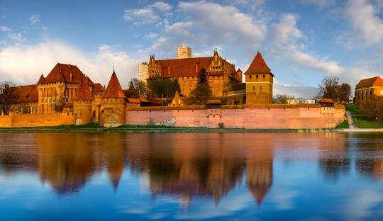
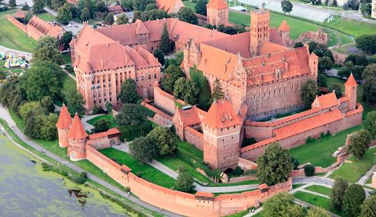

Трудно себе представить, но так иногда случается, что благодаря интернету хоть и знаешь практически все достойные внимания замки Польши, но вдруг обнаруживаешь для себе нечто абсолютно неизвестное и довольно интересное.
Замок Мариенбург(Мальборк)
-один из самых больших в мире кирпичных замков, служивший резиденцией магистров Тевтонского ордена. Занимает площадь свыше 20 гектаров. В 1997 году замок был включен в список Всемирного наследия ЮНЕСКО.
Первоначально на этом месте была построена небольшая комтурия, окруженная стеной из красного кирпича. В сентябре 1309 года в Мальборк из Венеции переместилась резиденция великого магистра Тевтонского ордена, вместе с этим сюда была перенесена его столица, после чего замок был перестроен.
В XIV—XV веках замок, окруженный четырьмя линиями обороны, с огромными запасами продовольствия и вооружения, внутренним колодцем и многочисленным гарнизоном, являлся сильно укреплённым пунктом крестоносцев.
В результате тринадцатилетней войны между крестоносцами и Польшей замок 7 июня 1457 года был выкуплен Ягеллонами у взбунтовавшихся наёмников. Мальборкский замок стал одной из резиденций польских королей.
В конце XIX века замок был реконструирован с целью возвращения сооружениям средневекового облика. Во время Второй мировой войны сильно пострадал и был фактически выстроен заново. В настоящее время замок является одним из крупнейших туристических центров Польши.


Замок в Опоруве
Строительство замка началось примерно в 1420 году, по инициативе племянника Богуслава - воеводы Миколае Опорувского.
Согласно легенде, когда-то в замке жила молодая девушка, которая была влюблена в юного монаха из соседнего монастыря.Как и у любого уважающего себя замка, в Опорувском находился подземный переход, который вёл к тому монастырю. В этом подземном тоннеле влюбленная пара и встречалась. Однажды ночью, во время очередного свиданья, разразилась сильная буря, небо пронизывали одна за другой молнии. Одна из них со всей своей мощью ударила в землю над потолком тоннеля, он рухнул, похоронив находившуюся там пару.
По сей день в окрестностях замкового парка можно увидеть что-то похожее на беловатое облако, и услышать еле слышные рыдание, а через несколько минут облако испаряется и вместе с ним прекращаются и рыдания. А кто-то иногда замечал белую фигуру блуждающую по залам замка, которая заканчивая свою прогулку влетала в раму одной из картин замка превращая её в портрет молодой дамы. Местные жители говорят, что это душа хозяйки замка погибшей во время любовной встречи блуждает вокруг не находя себе покоя.
После освобождения страны от фашистов замок стал собственностью Польской Народной Республики, и после 1947 года началась его комплексная реконструкция, после чего замок вновь принял готический вид и был открыт как музей.